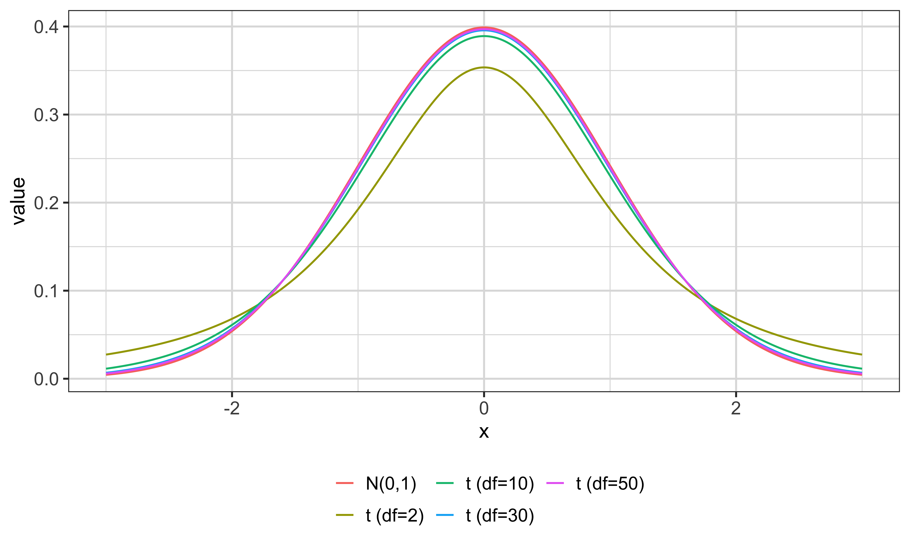

This lecture changes the question we ask about OLS. Look first at the two blocks on the slide. The large-sample block is about limiting behavior, meaning what happens to an estimator and its sampling distribution as the number of observations grows without bound. We never literally have an infinite sample. The value of the limit is that, when a sample is sufficiently large, the limiting result can be a useful approximation to the estimator’s actual finite-sample behavior. How large is sufficiently large depends on the data-generating process, so “large” is not one universal cutoff.
The small-sample block recalls the results you already know. Under the relevant Gauss-Markov conditions, OLS is unbiased, so its conditional expectation equals the true coefficient, and it is efficient among linear unbiased estimators, so no other linear unbiased estimator has a smaller variance. Those are finite-sample properties. If their assumptions hold, the claims apply whether you have fifty observations or fifty thousand. “Small sample” here therefore means “a result proved for any finite sample,” not “a result that stops working when the sample becomes large.”
We now add two different properties. Consistency asks where the estimator settles: as the sample grows, does it concentrate on the true parameter? Asymptotic normality asks about the shape and scale of the estimator’s sampling distribution around that truth. The distinction matters because an estimator can be centered correctly without concentrating, or it can concentrate very tightly on the wrong value. These limiting results are also the practical foundation for inference when the population error is not normally distributed. Later in the deck, you will see that a large-sample normal approximation replaces the exact finite-sample normality assumption. Keep the comparison on this opening slide in mind: exact finite-sample claims and approximate limiting claims answer related but different questions.
Large Sample Properties of OLS
Properties that describe the limiting behavior of OLS as the sample size grows
These limiting results often provide useful approximations when the sample is large
Small Sample Properties of OLS
Under certain conditions:
These are finite-sample properties: when their assumptions hold, they apply regardless of sample size.
Consistency is a statement about a sequence of estimators, one estimator for each possible sample size. In the notation on screen, theta is the fixed true population parameter, and theta hat sub n is the estimate computed from a sample of size n. The subscript matters because a new sample size gives us a new random estimator and therefore a new sampling distribution.
Read the formal definition from the inside out. Epsilon is any positive tolerance you choose, however small. The absolute value of theta hat sub n minus theta is the estimation error measured without regard to sign. The event inside the probability says that this error is less than epsilon, or equivalently that the estimate lies in an interval extending epsilon below and epsilon above the truth. Consistency requires the probability of that event to approach one as n goes to infinity. It must work for every positive epsilon, not just for a conveniently wide interval. As the sample grows, therefore, the sampling distribution puts arbitrarily close to all of its mass in any fixed neighborhood of the truth.
The notation on the last line, theta hat sub n converges in probability to theta, is the compact way to state exactly that definition. The superscript p over the arrow names the mode of convergence, convergence in probability. It does not say that every realized estimate moves monotonically toward theta as you add observations. A particular sample can still produce an estimate farther away. It says that such errors larger than any fixed tolerance become increasingly unlikely.
Do not substitute unbiasedness for consistency. Unbiasedness asks whether the estimator’s expectation equals theta at a particular n. Consistency asks whether its probability mass collapses around theta as n grows. An estimator can be unbiased at every n but have a variance that never shrinks, making it inconsistent. It can also have a finite-sample bias that becomes smaller with n and still be consistent. Finally, consistency is not a guarantee that the one estimate in your current dataset is close to the truth. It is a property of the repeated-sampling sequence, and its practical value is that large samples make substantial estimation errors increasingly improbable when the assumptions supporting consistency hold.
Verbally
An estimator is consistent if it becomes arbitrarily close to the true parameter with probability approaching 1 as the sample size grows.
Formally
For every \varepsilon>0,
P\left(\left|\widehat{\theta}_n-\theta\right|<\varepsilon\right)\longrightarrow 1.
We write \widehat{\theta}_n\overset{p}{\longrightarrow}\theta.
We will make the definition of consistency visible with a Monte Carlo experiment. The population model on screen is y sub i equals beta zero plus beta one times x sub i plus u sub i. The subscript i identifies an observation. Y is the dependent variable, x is the single explanatory variable, beta zero is the intercept, beta one is the population slope we want to estimate, and u collects all other determinants of y that are not included explicitly in the equation.
The slide says that MLR dot 1 through MLR dot 4 are satisfied. In this simple setting, that means the model is linear in beta zero and beta one, the observations are randomly sampled from the same population, x has variation so there is no perfect collinearity, and the error has zero conditional mean given x. That last condition, expected u given x equals zero, is the key reason OLS can locate the true slope rather than a systematically shifted value.
In the code behind the next tabs, the population equation will be y equals one plus x plus u. That makes both beta zero and beta one equal to one. The error is generated independently of x with mean zero, so zero conditional mean holds by construction. Because we generate the population process ourselves, we know the true slope before estimating anything. That is the special advantage of a Monte Carlo experiment. With real observational data, the true beta one is hidden, so you can study estimates and uncertainty but cannot directly check whether an estimate landed near the truth. Here we can compare every estimated slope with one and then see how that comparison changes as the sample size increases. Flip to the conceptual-steps tab before looking at the implementation.
Consider the OLS estimator of the coefficient on x in the following model, with MLR.1 through MLR.4 satisfied:
y_i = \beta_0 + \beta_1 x_i + u_i
Read the pseudo-code as a repeated-sampling experiment. First, choose a sample size capital N and generate N independent observations from the population equation y sub i equals beta zero plus beta one x sub i plus u sub i. Because the data-generating process is fixed, the true beta one stays equal to one in every sample and at every sample size. Only the random draws of x and u change.
Second, run the OLS regression with an intercept and save the estimated coefficient on x, beta one hat. One saved coefficient is one realization of the estimator. It does not reveal the estimator’s sampling distribution, just as one coin toss does not reveal a coin’s long-run behavior. Third, repeat the generate, estimate, and store sequence one thousand times. The resulting one thousand slope estimates approximate the sampling distribution of beta one hat for that particular N. A thousand is a simulation choice that makes the distribution reasonably smooth; it is not part of the definition of consistency.
Fourth, repeat that entire experiment for several sample sizes. The code uses N equal to one hundred, one thousand, and ten thousand. This comparison is essential. A single sampling distribution, even one based on many Monte Carlo replications, tells you nothing by itself about a limit as N grows. We need to see how the distribution changes across sample sizes while the population model remains unchanged.
The prediction at the bottom translates consistency into a visual test. Each distribution should be centered near the true value one, and its spread should shrink as N rises. Pick any fixed margin around one, such as one hundredth in either direction. Consistency means that the fraction of simulated estimates falling inside that margin approaches one as N grows. Do not reduce the claim to “the average estimate is one.” Centering is related to unbiasedness. Consistency additionally requires the distribution to concentrate. The R-code tab implements these four steps, and the Results tab will let you check the prediction.
What you should see is
As N gets larger, the distribution of \widehat{\beta}_1 becomes more tightly concentrated around its true value (here, 1). For any fixed margin around 1, the probability that \widehat{\beta}_1 falls inside that margin approaches 1.
This tab contains a one-time WebR setup cell followed by the Monte Carlo code. The setup cell has context set to setup, which means its objects and graphics settings are prepared for the later WebR cells in this deck. The lecture-theme function starts from theme B W, a white-background ggplot theme, with a base text size whose default is sixteen. Axis titles use the full base size; axis tick labels and both legend text and legend titles use ninety percent of it. The plot panel, overall plot, legend, and legend keys are then made transparent so the slide’s paper-colored background shows through. The panel grid is set to grey eighty-seven so it remains visible against that background.
WebR draws at seventy-two dots per inch even though the deck requests two hundred sixteen. The variable WebR scale is therefore two hundred sixteen divided by seventy-two, which equals three. The two assign-in-namespace calls multiply ggplot’s internal point and stroke conversion constants by that factor so text, points, and line-based marks are sized correctly on the browser canvas. Theme lecture then calls the same theme at eighteen times the scale. Its line and rectangle widths are reset to eighteen over twenty-two, because leaving those widths tied to the tripled base size would make them far too thick. Theme set makes this corrected lecture theme the default for subsequent ggplots. These lines change presentation only, not the simulated estimates.
Now look at the preparation block. Capital B is one thousand, the number of Monte Carlo replications at each sample size. N list is the vector one hundred, one thousand, ten thousand. N len uses length to count those three entries. Estimate storage is a matrix initially filled with zeros, with B rows and N len columns. A row will identify a replication, and a column will identify a sample size.
The outer for loop lets j run from one through N len. Temp N takes the j-th entry of N list, so the first pass uses one hundred observations, the second one thousand, and the third ten thousand. Inside it, the i loop runs from one through B, producing one thousand fresh samples for the current size. R-norm with the single argument temp N draws temp N independent standard-normal values, so x has mean zero and variance one. A separate r-norm call generates a fresh standard-normal error and multiplication by zero point two gives u a standard deviation of zero point two and variance zero point zero four. Because the two calls are independent and both variables have mean zero, expected u given x is zero.
The line y equals one plus x plus u implements a population intercept of one and slope of one. Data frame creates a two-column dataset with columns named y and x. Ell-em then estimates y tilde x using that dataset. The tilde formula includes an intercept automatically, so the fitted model matches the population equation. Reg dollar coef contains the intercept estimate first and the slope estimate second. Estimate storage bracket i comma j receives the second coefficient, putting replication i into the column for sample size j.
The code does not set a random-number seed, so each run gives different individual estimates and a slightly different density plot. That variation is expected. The design, the true coefficient, and the pattern across sample sizes do not change. Also notice that x and u are regenerated inside the inner loop. Each replication is a genuinely new random sample, not repeated estimation on one dataset and not resampling a fixed set of observations. With the storage matrix filled, move to Results to see the three estimated sampling distributions.
The code first converts the storage matrix into a form ggplot can use. As-data-table turns the matrix into a data table, and melt with measure variables one through N len stacks its three sample-size columns. The resulting variable column records which original matrix column an estimate came from, and the value column contains the estimated slopes themselves.
G-g-plot uses that long data as its source. Geom density maps value to the horizontal coordinate and variable to fill, so it estimates one density curve for each sample-size column and colors the groups separately. Alpha equal to zero point four makes each filled density partly transparent, allowing overlapping distributions to remain visible. Geom v-line places the vertical reference line at an x intercept of one, the true beta one. X-lim restricts the displayed horizontal range from zero point nine to one point one so you can inspect concentration near the truth. Scale fill discrete titles the legend “Sample Size” and replaces the matrix-column labels with N equals one hundred, one thousand, and ten thousand, in the same order as N list. Theme lecture applies the deck’s plotting style, and the final theme call puts the legend at the bottom. Saving the plot as g co ex lets the final line print it.
Read the graph carefully. The horizontal axis is the estimated slope beta one hat, limited to zero point nine through one point one. The vertical axis is density, so height represents how concentrated the simulated sampling distribution is, not a count of replications. The three translucent filled curves correspond to the sample sizes in the legend, and the vertical line at one marks the population slope. All three curves are centered near one because the design satisfies zero conditional mean. What changes sharply is their spread. The N equals one hundred curve is the widest; one thousand is narrower; ten thousand is extremely concentrated and therefore taller. The area under each density is one, so a taller peak accompanies a narrower distribution.
This is the definition of consistency in picture form. Choose a fixed interval around one, however narrow. As N rises, a larger share of the density lies inside that interval, and in the limit that share approaches one. Equivalently, the probability of an absolute estimation error larger than the chosen tolerance approaches zero. The shrinking occurs at the familiar root-N rate: multiplying the sample size by one hundred reduces a standard error by roughly a factor of ten when the other features of the design stay fixed.
Do not confuse the center with the concentration. Unbiasedness alone would tell you that the mean of each sampling distribution is one. It would not require the curves to narrow at all. Consistency is the additional statement that the probability mass collapses onto one. The statement beneath the graph summarizes the econometric result: under MLR dot 1 through MLR dot 4, the OLS coefficient estimators are consistent. The next simulation will deliberately violate the fourth assumption and show why a large sample cannot replace it.
Consistency of OLS estimators
Under MLR.1 through MLR.4, OLS estimators are consistent.
Now we repeat the Monte Carlo experiment after deliberately breaking the zero conditional mean assumption. The first pseudo-code bullet still uses the model y sub i equals beta zero plus beta one x sub i plus u sub i, and the true beta one will still be one. The crucial addition is expected u sub i given x sub i not equal to zero. This says that knowing x changes the expected value of the omitted factors collected in u. In econometric language, x is endogenous. OLS then attributes to x some systematic variation in y that actually belongs to the error, so the slope estimator has a persistent bias.
The remaining steps match the valid experiment. For a chosen capital N, generate a fresh sample, estimate the intercept and slope, and store beta one hat. Repeat that process one thousand times to approximate the sampling distribution for that N, then compare distributions across sample sizes. Holding the data-generating process fixed while increasing N isolates what more observations actually accomplish.
The question at the bottom is the point of the slide: does the bias disappear as N gets larger? Commit to an answer before running the code. Informal advice often treats a large dataset as a cure for any weakness, but sample size and identification solve different problems. More data reduce random sampling variation. They do not make an endogenous regressor exogenous, because the correlation between x and u is a population feature repeated in every observation. If OLS is converging to the wrong population value, a larger N will make it converge more precisely to that wrong value. On the next tab, look for the shared random component that creates the violation, then use the Results tab to see both narrowing and miscentering at once.
Pseudo Code
Question
Does the bias disappear as N gets larger?
The preparation and loop structure are the same as before. Capital B is one thousand replications, N list contains one hundred, one thousand, and ten thousand observations, N len counts the three sample sizes, and estimate storage is a one-thousand-by-three zero matrix. The outer j loop selects a sample size and assigns it to temp N. The inner i loop creates one thousand independent samples at that size. In each regression, ell-em estimates y tilde x with an intercept, and the second element of reg dollar coef, the slope on x, is stored in row i and column j.
Focus on the three highlighted data-generation lines. R-norm of temp N creates mu, a fresh standard-normal variable with mean zero and variance one. Then x is another independent standard-normal draw plus zero point five times mu. The error u is yet another independent standard-normal draw plus the same zero point five times mu. The independent pieces of x and u do not covary, but their shared mu component does. Its contribution to the covariance is zero point five times zero point five times the variance of mu, which is zero point two five. Thus covariance of x and u is positive rather than zero.
You can also see why expected u given x is not zero. A high x is evidence that the shared mu may be high, and a high mu raises u as well. Observing x therefore contains information about the expected error. This is the endogeneity that violates MLR dot 4. The variance of x is the variance of its independent standard-normal component, one, plus the variance of zero point five mu, zero point two five, for a total of one point two five.
The line y equals one plus x plus u keeps the true population intercept and slope at one. Data frame again packages y and x for ell-em. Nothing in the regression command tells OLS that x and u share mu, because u is unobserved. OLS simply fits the observed association between y and x. In a simple regression with an intercept, the probability limit of the fitted slope is the true slope plus covariance of x and u divided by variance of x. Here that is one plus zero point two five divided by one point two five, or one point two. Because the correlation was built explicitly, we can calculate the wrong value to which OLS should converge before looking at the simulation. As in the earlier code, no seed is set, so individual curves vary between runs, but their limiting center does not.
The plotting code again converts the wide estimate-storage matrix to long form. As-data-table makes it a data table, and melt stacks columns one through N len into a variable column identifying sample size and a value column containing beta one hat. G-g-plot supplies that table to geom density. Value is mapped to the horizontal axis, variable is mapped to fill, and alpha equal to zero point four makes the three filled densities transparent enough to compare. Scale fill discrete gives the legend its “Sample Size” title and labels the groups N equals one hundred, one thousand, and ten thousand. Theme lecture supplies the common style, and the final theme call places the legend below the graph.
Two vertical lines now carry different meanings. Geom v-line at an x intercept of one uses a dashed line. That is the true structural coefficient beta one in the equation for y. The second geom v-line is solid and sits at one point two. That is the probability limit of the OLS slope under this endogenous design. Unlike the earlier graph, there is no explicit x-lim call, so ggplot chooses a horizontal range that contains the simulated densities and both reference lines. The horizontal axis is still the estimated slope and the vertical axis is density.
Look at both location and spread. As N increases, the density becomes narrower, just as it did in the consistent simulation. More observations still average away random sampling noise. But the curves are centered near the solid line at one point two, not the dashed truth at one. At N equal to ten thousand, the estimates are especially precise and especially clearly wrong. Precision means repeated estimates are close to one another; accuracy means they are close to the true parameter. This figure separates those ideas.
Now read the probability-limit calculation below the graph one line at a time. P-lim of beta one hat means the value to which the estimator converges in probability. In simple regression, that limit is one plus covariance of x and u divided by variance of x. The one is the true beta one. The covariance is zero point two five because x and u each load on the same unit-variance mu with coefficient zero point five. The variance of x is one from its independent normal component plus zero point two five from the shared component, giving one point two five. Zero point two five divided by one point two five is zero point two, so the limit is one point two.
The positive endogeneity therefore creates an asymptotic upward bias of zero point two. Increasing N does not change that covariance or variance, so it cannot remove the bias. It only shrinks the sampling distribution around the biased limit. A conventional interval based on this misspecified OLS model can consequently become very tight around one point two while failing to cover the true value one. That is the central lesson: more data buy precision, not correctness. Identification assumptions determine what value you are estimating; sample size determines how much sampling noise surrounds it.
The dashed line is the true coefficient, \beta_1=1. The solid line is the probability limit:
\operatorname{plim}(\widehat{\beta}_1) =1+\frac{Cov(x,u)}{Var(x)} =1+\frac{0.25}{1.25} =1.2.
As N grows, the sampling distribution becomes narrower around 1.2—not around the true value of 1. More data reduce sampling variation but do not remove this endogeneity bias.
This tab recalls the normality assumption and separates what it was needed for from what it was not needed for. The assumption says that the population error u is independent of all explanatory variables x one through x k and is normally distributed with mean zero and variance sigma squared. Independence is stronger than merely having zero conditional mean. It means the entire distribution of u, not only its mean, does not change with the regressors. The notation u is distributed normal with zero and sigma squared names the bell-shaped distribution, its center zero, and its constant variance sigma squared.
This is MLR dot 6. We did not need it to prove that OLS is unbiased under MLR dot 1 through MLR dot 5, and we did not need it for the Gauss-Markov efficiency theorem. We introduced it for exact finite-sample inference. If the errors are normal, an OLS coefficient centered at its true value and divided by its true conditional standard deviation is exactly standard normal. Once sigma is estimated, the corresponding statistic is exactly t with n minus k minus one degrees of freedom. The related joint statistic has an exact F distribution.
Without MLR dot 6, those exact finite-sample distribution statements do not follow. A statistic can still be computed, but referring it to an exact t or F distribution is not justified solely by MLR dot 1 through MLR dot 5. This distinction matters for outcomes whose errors are skewed, heavy-tailed, discrete, or otherwise visibly nonnormal. Normality can be an implausibly strong description even when the regression’s conditional mean is correctly specified.
The fortunate result in the bottom block is that exact error normality is not necessary for approximate large-sample inference. Under the assumptions developed on the next tabs, a properly centered and scaled OLS estimator becomes approximately normal as n grows. “Approximately” and “large enough” are the key phrases highlighted in blue. This is a limiting justification, not an exact claim at every n, and no universal sample-size threshold guarantees a good approximation. The central limit theorem supplies the mechanism. It lets sums of many independent contributions become normal in shape even when each contribution is not normal. We will state that theorem next, demonstrate it with a deliberately nonnormal Bernoulli variable, and then apply it to OLS.
When we talked about hypothesis testing, we made the following assumption:
Normality assumption
The population error u is independent of the explanatory variables x_1,\dots,x_k and is normally distributed with zero mean and variance \sigma^2:
u\sim N(0,\sigma^2)
Remember
Without the normality assumption, the t- and F-statistics constructed earlier do not have exact t and F distributions in finite samples
Therefore, their exact finite-sample tests are no longer justified
Fortunately
Under the assumptions developed below, suitably standardized OLS estimators are approximately normally distributed when the sample size is large enough. This supports approximate large-sample inference without MLR.6.
The callout states one standard version of the central limit theorem. We begin with an infinite sequence x one, x two, and so on. Independent and identically distributed means that the draws do not influence one another and all come from the same population distribution. Each x sub i has expected value mu and variance sigma squared. The less-than-infinity condition on sigma squared is substantive: this version of the theorem requires a finite population variance. The underlying x values do not themselves need to be normally distributed.
Inside the large parentheses, one over n times the sum from i equals one to n of x sub i is the sample mean, x bar. Subtracting mu centers that mean at its population expectation. Multiplying the centered difference by root n supplies the correct scale. The sample mean has variance sigma squared over n, so x bar minus mu shrinks toward zero at rate one over root n. Multiplication by root n offsets that shrinking variance. The transformed quantity has variance sigma squared rather than a variance that disappears.
The d over the arrow means convergence in distribution. As n approaches infinity, the distribution of root n times x bar minus mu approaches the distribution written on the right, a normal random variable with mean zero and variance sigma squared. This does not say that the transformed statistic itself converges to zero. Its limiting distribution remains spread out. If you also divided the expression by sigma, the right side would be standard normal, with mean zero and variance one.
Both centering and scaling matter. Without subtracting mu, the root-n multiplication would drive a nonzero mean away rather than produce a centered limit. Without multiplying by root n, x bar would converge in probability to mu and the distribution of x bar minus mu would collapse to a point at zero, leaving no nondegenerate shape for inference. The central limit theorem preserves the shrinking estimator’s local variation on a scale we can study.
This is why the theorem matters for regression. An OLS estimation error can be written in terms of sample averages of regressor-error products. Under suitable sampling and moment conditions, a central limit theorem gives those averages an asymptotically normal shape. We can then use that shape to approximate probabilities, critical values, and confidence intervals even when the individual errors are not normal. The next tab uses Bernoulli draws to make the distinction between a nonnormal observation and a normal limiting distribution especially clear.
Central Limit Theorem
Suppose \{x_1,x_2,\dots\} is a sequence of independent and identically distributed random variables with E[x_i]=\mu and Var(x_i)=\sigma^2<\infty. Then, as n approaches infinity,
\sqrt{n}\left(\frac{1}{n} \sum_{i=1}^n x_i-\mu\right)\overset{d}{\longrightarrow} N(0,\sigma^2).
Verbally
After centering the sample mean at \mu and scaling it by \sqrt{n}, its distribution approaches a normal distribution with mean 0 and variance \sigma^2.
This example starts with a Bernoulli random variable, one of the least normal-looking variables possible. Each x sub i can take only two values. It equals one, which we can call a success, with probability p equal to zero point three; it equals zero with probability zero point seven. The observations are independent draws from that same distribution. A single draw is discrete and asymmetric, so the central limit theorem is not relying on normality hidden in the original data.
For a Bernoulli variable, the expected value is p, so mu equals zero point three. Its variance is p times one minus p. Here that is zero point three times zero point seven, which equals zero point two one. Sigma is therefore the square root of zero point two one. Those are the mean and variance inserted into the general central-limit result at the bottom of the slide.
Now read the WebR cell in the right column. R-binom is asked for ten draws, with size equal to one and probability equal to zero point three. Size one makes each output a Bernoulli zero or one rather than a count from several trials. The assignment to x is wrapped in parentheses, so WebR both saves the ten values and prints them. Each run produces a new sequence, and the number of ones need not be exactly three. Three is the expected count over repeated samples, not a requirement for every group of ten.
The second line computes root ten times the quantity mean of x minus zero point three. Mean of x is the sample proportion of ones, and zero point three is the population mean. Thus this is one realization of the centered and root-N-scaled sample mean in the theorem. With only ten Bernoulli observations, the result can take only discrete values because the number of successes is an integer. Do not interpret that single printed number as evidence for or against the theorem. The theorem concerns the sampling distribution across repeated samples.
The “According to CLT” line gives the general expression: root n times the sample mean minus mu converges in distribution to a normal with mean zero and variance sigma squared. The “So” line substitutes this population’s actual values. Root n times the sample mean minus zero point three approaches a normal distribution with mean zero and variance zero point two one. Notice that the limiting variance is zero point two one, not zero point two one divided by n, because root n has already rescaled the shrinking sample mean. Flip to the Demonstration tab, where five thousand repetitions approximate this distribution and let you change n.
Setup
Consider a random variable x that follows a Bernoulli distribution with p=0.3. It equals 1 with probability 0.3 and 0 with probability 0.7.
x_i \sim \operatorname{Bernoulli}(p=0.3)
This is what 10 random draws and the transformed sample mean look like:
According to CLT
\sqrt{n}\left(\frac{1}{n} \sum_{i=1}^n x_i-\mu\right)\overset{d}{\longrightarrow} N(0,\sigma^2)
So,
\sqrt{n}\left(\frac{1}{n} \sum_{i=1}^n x_i-0.3\right)\overset{d}{\longrightarrow} N(0,0.21)
This interactive application repeats the Bernoulli experiment enough times to display a sampling distribution. The prose above the app tells you exactly what is repeated: for the capital N you choose, each of five thousand iterations draws N Bernoulli observations with success probability zero point three and computes root N times x bar minus zero point three. The histogram collects those five thousand transformed means. The red curve is the theoretical limiting normal density with mean zero and variance zero point two one.
The first three library calls load Shiny for interactivity, g-g-plot two for the graph, and B-S-lib for the sidebar page layout. Page sidebar builds the interface and titles it “CLT demonstration.” Inside the sidebar, numeric input creates the control whose internal name is n samples. Its displayed label is “Number of samples,” while the code uses its value as N, the number of observations within each Monte Carlo sample. The minimum is one, the maximum is one hundred thousand, the initial value is ten, and the step is ten. The line break adds space. Action button creates the “Simulate” button with the internal name simulate, and open equal to true makes the sidebar visible when the app loads. Plot output reserves a location named clt Plot for the graph.
The server function connects those controls to the output. Observe event listens for a click on the simulate button, so changing N alone does not redraw the graph until you click Simulate. Render plot then constructs the graph. Capital N receives the numeric control’s current value. Capital B is fixed at five thousand repetitions, and p is fixed at zero point three. R-binom is called for B outputs, with size equal to N and probability p. Each output is therefore the number of successes in one N-observation sample. This is computationally equivalent to drawing N separate Bernoulli values and summing them, but much faster than storing all five thousand times N individual draws.
Successes divided by N is the sample proportion, or x bar, in each replication. Storage is root N times successes over N minus p. It therefore contains five thousand realizations of the exact statistic in the central limit theorem. G-g-plot begins without a default dataset because the histogram and theoretical curve use different sources. Geom histogram receives a one-column data frame made from storage. Its aesthetic maps storage to the horizontal axis and after-stat density to the vertical axis. Density scaling is important: it makes the histogram’s total area one, so it can be compared directly with a probability density curve. Thirty bins group the simulated values; navy colors the bin outlines, and grey eighty fills them.
Geom function overlays the limiting density. Fun equal to d-norm selects the normal density function. The arguments set its mean to zero and its standard deviation to the square root of p times one minus p, which is root zero point two one. The curve is red with line width one. X-lab writes root N times x bar minus zero point three on the horizontal axis, y-lab names the vertical axis Density, and theme B W with base size eighteen makes the standalone app readable. Shiny app finally joins the user interface and server.
Use the control to compare small and large N, clicking Simulate after each change. At very small N, the transformed mean has only a handful of possible values, so the histogram is separated into discrete spikes and can look quite unlike the smooth red curve. As N grows, there are more possible sample proportions, the gaps fill in, and the histogram follows the red bell shape more closely. Random Monte Carlo noise remains because there are only five thousand repetitions.
Pay attention to both axes and to what does not change. The horizontal axis is the centered, root-N-scaled statistic, not the unscaled sample mean. The vertical axis is density. Because of the root-N scaling, the limiting variance stays at zero point two one for every N. The histogram becomes more normal in shape, but it does not collapse to zero. If we graphed x bar itself, its variance would be zero point two one over N and the distribution would narrow. Here convergence in distribution is about the shape of the rescaled statistic. That is the same kind of scaling we will use for the OLS coefficient on the next tab.
In each of 5000 iterations, this application draws the number of observations you specify (N) from x_i\sim\operatorname{Bernoulli}(0.3) and calculates \sqrt{N}(\bar{x}-0.3). The histogram shows the resulting 5000 values; the red curve is the limiting N(0,0.21) density.
#| '!! shinylive warning !!': |
#| shinylive does not work in self-contained HTML documents.
#| Please set `embed-resources: false` in your metadata.
#| standalone: true
library(shiny)
library(ggplot2)
library(bslib)
# Define UI for CLT demonstration
ui <- page_sidebar(
title = "CLT demonstration",
sidebar = sidebar(
numericInput("n_samples",
"Number of samples:",
min = 1, max = 100000, value = 10, step = 10
),
br(),
actionButton("simulate", "Simulate"),
open = TRUE
),
plotOutput("cltPlot")
)
# Define server logic to simulate the Central Limit Theorem
server <- function(input, output) {
observeEvent(input$simulate, {
output$cltPlot <- renderPlot({
N <- input$n_samples # number of observations #<<
B <- 5000 # number of iterations
p <- 0.3 # mean of the Bernoulli distribution
successes <- rbinom(B, size = N, prob = p)
storage <- sqrt(N) * (successes / N - p)
#--- create a figure to present ---#
ggplot() +
geom_histogram(
data = data.frame(x = storage),
aes(x = x, y = after_stat(density)),
bins = 30,
color = "navy",
fill = "gray80"
) +
geom_function(
fun = dnorm,
args = list(mean = 0, sd = sqrt(p * (1 - p))),
color = "red",
linewidth = 1
) +
xlab(expression(sqrt(N) * (bar(x) - 0.3))) +
ylab("Density") +
# This app is compiled standalone and runs in its own iframe, so it can
# see neither lecture_theme() nor the slide background. Only the size is
# brought into line with the rest of the site.
theme_bw(base_size = 18)
})
})
}
# Run the application
shinyApp(ui = ui, server = server)Now apply the same limiting logic to an OLS coefficient. The statement at the top says that under MLR dot 1 through MLR dot 5, OLS is asymptotically normal even if the population error itself is not normal. Those assumptions give us a model linear in its parameters, random sampling, no perfect collinearity, zero conditional mean, and homoskedastic errors. MLR dot 6 is absent. That is the key gain: normality of u has been replaced by a central-limit argument for the estimator.
Read the displayed result symbol by symbol. Beta j is the true coefficient on explanatory variable x j, and beta j hat is its OLS estimate from n observations. Beta j hat minus beta j is the estimation error. Multiplication by root n prevents that error’s distribution from collapsing as the sample grows. The d over the arrow says that the distribution of this scaled error converges to the distribution on the right. That limiting distribution is normal with mean zero and variance sigma squared divided by alpha j squared. Sigma squared is the homoskedastic population error variance.
Alpha j squared measures the population amount of x j variation that remains after accounting for the other regressors. To construct it, imagine an auxiliary regression of x j on an intercept and every other independent variable in the model. R sub i j is the residual for observation i from that regression. It is the part of x i j that cannot be linearly predicted by the other regressors. The expression one over n times the sum of r sub i j squared is its sample average squared residual, and p-lim asks for the value to which that average converges in probability. That limit is alpha j squared.
The formula explains multicollinearity. If the other regressors explain almost all variation in x j, the residuals r i j are small, alpha j squared is small, and sigma squared divided by alpha j squared is large. There is little independent movement in x j with which to identify beta j, so the coefficient is imprecise. If x j has abundant variation unrelated to the other regressors, alpha j squared is larger and the asymptotic variance is smaller. Perfect collinearity would make this residual variation zero and prevent estimation entirely; near collinearity does not prevent estimation but raises uncertainty.
Because the displayed limit is for root n times the error, the unscaled estimator’s variance is approximately sigma squared divided by n times alpha j squared in a large sample. Its standard error therefore shrinks at the root-N rate. The limiting mean zero is the local expression of consistency: the distribution is centered around the true beta j after scaling.
The bottom block supplies the remaining unknown variance component. Sigma hat squared is defined as the sum of squared OLS residuals, u hat i squared, divided by n minus k minus one. Here k is the number of slope regressors, and the additional one accounts for the estimated intercept, so the denominator is the residual degrees of freedom. Under MLR dot 1 through MLR dot 5, this estimator converges in probability to sigma squared. That consistency lets us replace the unknown population variance in a standard error with its sample estimate without changing the limiting normal distribution. This replacement, together with an estimate of alpha j squared, produces the usual OLS standard error used in the studentized statistic on the next tab.
Under assumptions MLR.1 through MLR.5, the OLS estimator is asymptotically normally distributed even when the error is not normally distributed.
Asymptotic Normality of OLS
\sqrt{n}(\widehat{\beta}_j-\beta_j)\overset{d}{\longrightarrow} N(0,\sigma^2/\alpha_j^2)
where
\alpha_j^2=\operatorname{plim}\left(\frac{1}{n}\sum_{i=1}^n r_{ij}^2\right),
and r_{ij} is the residual from regressing x_j on the other independent variables (and an intercept).
Consistency
\widehat{\sigma}^2\equiv \frac{1}{n-k-1}\sum_{i=1}^n \widehat{u}_i^2 is a consistent estimator of \sigma^2 under MLR.1 through MLR.5.
Read this slide as a top-and-bottom comparison. In both blocks, beta j hat is the estimated coefficient, beta j is its true population value, and the numerator beta j hat minus beta j is the estimation error. The difference is the assumptions, the denominator, and whether the stated distribution is exact or limiting.
Start with the small-sample block. Under MLR dot 1 through MLR dot 5 plus MLR dot 6, the error is normal as well as independent of the regressors. In the first line, S-D of beta j hat given capital X is the true conditional standard deviation of the estimator when the entire regressor matrix X is held fixed. Subtracting beta j centers the estimate, and dividing by that true standard deviation scales it to variance one. The resulting statistic is exactly normal with mean zero and variance one. The tilde means “has this distribution,” not merely “is approximately distributed.” This claim holds at any sample size for which the model can be estimated.
In practice sigma is unknown, so the true conditional standard deviation is unknown. The second small-sample line replaces it with the estimated standard error, S-E hat of beta j hat. Estimating sigma adds uncertainty. Under normal errors, the resulting ratio has an exact t distribution with n minus k minus one degrees of freedom. Capital N is the sample size, k is the number of slope regressors, and one more degree of freedom is used by the intercept. The t distribution has heavier tails than a standard normal, especially when those residual degrees of freedom are small.
Now move to the large-sample block. We retain MLR dot 1 through MLR dot 5 but remove MLR dot 6. Without normal errors, neither exact finite-sample statement is available. The first standardized statistic instead converges in distribution to standard normal as n approaches infinity. The arrow with d makes the limiting scope explicit. The central limit theorem supplies the normal shape rather than an assumption that each error is normal.
The second large-sample line again replaces the unknown true standard deviation with the estimated standard error. Because the default OLS variance estimator is consistent under MLR dot 1 through MLR dot 5, that replacement becomes negligible in large samples. The studentized statistic also converges in distribution to standard normal. This use of a consistent estimated scale is an application of Slutsky’s theorem.
So memorize the pair for its logic, not just its appearance. With MLR dot 6, the first statistic is exactly standard normal and the statistic with an estimated standard error is exactly t in a finite sample. Without MLR dot 6, both statements are approximations justified as n grows, and the limiting reference distribution is standard normal. The formulas you compute look familiar, but the justification and scope differ. That difference determines how confidently you can use the approximation in a small or unusually distributed sample.
Small sample (any sample size)
Under MLR.1 through MLR.5 and MLR.6,
Large sample (as n\to\infty)
Under MLR.1 through MLR.5 without MLR.6,
The practical testing recipe remains almost the same. Suppose the null hypothesis is H zero: beta j equals beta j comma zero. Beta j is the unknown population coefficient, and beta j comma zero is the particular value asserted by the null, often zero. The alternative for the test on this slide is two-sided, so it allows beta j to be either below or above the null value.
First calculate t sub j. Its numerator is beta j hat minus beta j comma zero, the estimated distance from the null. Its denominator is the estimated standard error of beta j hat, which expresses that distance in units of estimated sampling uncertainty. A positive statistic means the estimate is above the null value, a negative statistic means it is below, and magnitude measures how many standard errors separate them. Although we continue to call this a t-statistic, under the large-sample argument its limiting reference distribution is standard normal.
For a significance level alpha, a two-sided test allocates alpha over both tails, alpha over two in the lower tail and alpha over two in the upper tail. The positive critical value is therefore the one-minus-alpha-over-two quantile of the chosen reference distribution. Taking the absolute value of t j folds the two tails together. Reject H zero when that absolute value exceeds the critical value. At alpha equal to zero point zero five with a standard-normal reference, for example, the cutoff is approximately one point nine six. Equivalently, reject when the two-sided p-value is below alpha.
The question at the bottom is exactly right: if asymptotic theory gives a standard normal limit, should the critical value come from normal zero one rather than a t distribution? In principle, yes. Exact finite-sample theory used a t critical value because sigma was estimated under normal errors; the large-sample theory yields a standard normal limit even after replacing unknown quantities consistently. In practice regression software commonly reports t-based values using n minus k minus one degrees of freedom. Flip to the next tab to see why that choice makes almost no difference once the residual degrees of freedom are large enough for the asymptotic approximation itself to be credible.
It turns out,
For a two-sided test of H_0:\beta_j=\beta_{j,0}, you can proceed much as before:
Calculate t_j=(\widehat{\beta}_j-\beta_{j,0})/\widehat{\operatorname{se}}(\widehat{\beta}_j).
Reject at significance level \alpha if |t_j| exceeds the 1-\alpha/2 critical value.
But,
Shouldn’t we use N(0,1) to find the critical value?
The code constructs a direct density comparison. Seq creates one thousand evenly spaced x values from negative three to positive three. D-norm evaluates the standard-normal density at those values. Each d-t call evaluates a t density at the same x values, with degrees of freedom set to two, ten, thirty, or fifty. Those degrees of freedom would correspond to n minus k minus one in the regression setting.
Data table combines the common x grid and the five density vectors. The quoted column names are the labels that will appear in the legend: N zero one for the standard normal and t with its relevant degrees of freedom for each t curve. The pipe passes that wide table to melt. Id variable equal to x keeps the horizontal coordinate fixed, while the five density columns are stacked into a variable column identifying the distribution and a value column holding its density.
G-g-plot uses this long table. Geom line maps x to the horizontal axis, value to the vertical axis, and variable to color, producing one colored curve per distribution. Scale color discrete removes the legend title by setting name to an empty string, and guide legend with n-row equal to two arranges the five entries across two rows. Theme lecture applies the deck style, and the last theme call puts the legend below the plot.
On the graph, the horizontal axis is a possible value of the standardized test statistic from negative three through three. The vertical axis is probability density. All curves are symmetric around zero and have total area one. The standard normal has the highest center among the displayed curves. At only two degrees of freedom, the t curve is lower and flatter near zero and allocates more probability to values far from zero. Those heavier tails extend beyond the plotted range as well. This is why a small-degrees-of-freedom t test uses a much larger critical value than a normal test.
As degrees of freedom increase, the uncertainty from estimating the scale becomes less important and the t distribution approaches standard normal. At ten degrees of freedom a difference remains visible. By thirty the curves are close, and by fifty they are difficult to separate by eye. The same convergence applies to critical values: for a five-percent two-sided test, the positive cutoff moves toward the standard-normal value of about one point nine six as the degrees of freedom grow.
This answers the previous tab’s practical question. Asymptotic theory formally calls for a standard-normal critical value. Software may continue to use the corresponding t value with n minus k minus one degrees of freedom. In a sample large enough to make the asymptotic normal approximation persuasive, those two reference distributions and their p-values are usually very similar. You can therefore use the p-values reported by standard regression software, while remembering that the real large-sample justification comes from asymptotic normality, not from exact normal errors.

The asymptotic theory calls for a standard-normal critical value. Because t_{n-k-1} approaches N(0,1) as its degrees of freedom grow, using the corresponding t critical value makes very little difference in a large sample.
End with the warning in red. Large-sample theory lets us remove the normality assumption, MLR dot 6, but it does not automatically validate the default OLS variance estimator when MLR dot 5 fails. Homoskedasticity means that the conditional variance of u given all regressors is the same constant sigma squared for every observation. Heteroskedasticity means that conditional variance changes with the regressors or across observations.
Under zero conditional mean and the other consistency conditions, heteroskedasticity does not by itself make the OLS coefficient estimates inconsistent. Beta hat can still converge to beta. What changes is the variance of that limiting distribution. The default homoskedastic OLS formula treats every observation as if it shared one common error variance. When the true variances differ, that is the wrong formula, and its estimated standard errors need not converge to the correct sampling standard deviations. The direction of the error is not fixed: default standard errors can be too small or too large depending on the pattern of heteroskedasticity.
This problem does not fade as n grows. More observations can make beta hat concentrate, but they also make an inconsistent variance formula converge more precisely to the wrong variance quantity. The resulting t-statistics, p-values, and confidence intervals can remain invalid. Asymptotic normality is useful only when the statistic is divided by a standard error that consistently estimates the appropriate asymptotic variance.
With independent observations, use heteroskedasticity-robust, or sandwich, standard errors. They keep the same OLS coefficient estimates but replace the homoskedastic variance formula with one that allows observation-specific squared residuals to contribute differently. If observations may be dependent within groups, such as repeated years for the same county or students within the same school, use standard errors clustered at the level where dependence can occur. Clustering allows arbitrary correlation within a cluster while relying on independence across clusters, so the clustering level must match the sampling and assignment structure.
Robust or clustered standard errors repair an uncertainty formula; they do not repair an endogenous regressor, omitted-variable bias, or a misspecified conditional mean. Connect this warning to the earlier inconsistency simulation. Endogeneity made the coefficient converge to one point two instead of one, and no standard-error choice could restore consistency. Heteroskedasticity can leave the coefficient centered correctly while making its default reported uncertainty wrong. In applied work you must address both questions: do the identifying assumptions make the coefficient target the right parameter, and does the variance estimator reflect the dependence and heteroskedasticity in the data?
The consistency of the default estimator of Var(\widehat{\beta}) does require the homoskedasticity assumption (MLR.5).
In other words, using the default variance estimator under heteroskedasticity remains a problem even when the sample size is large.
Use heteroskedasticity-robust standard errors with independent observations. When observations may be dependent within groups, use standard errors clustered at the appropriate level.